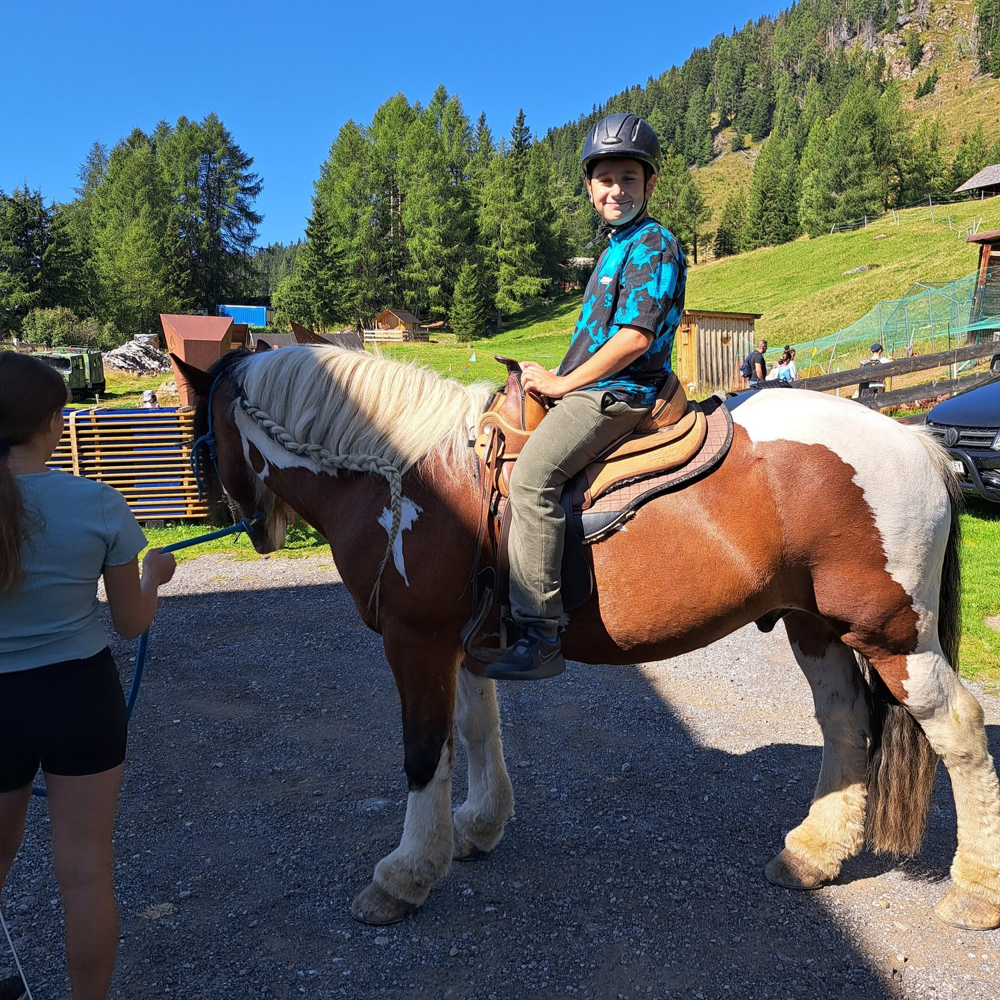

0 bis 6 JahreFamilienorientierte Reha für Kleinkinder
Für unsere jüngsten Patientinnen und Patienten zusammen mit Eltern und Geschwistern. Ein behutsamer Tagesrhythmus, spielerische Entwicklungsförderung, Psychomotorik und intensiver Austausch für entlastete Eltern.
- Begleitung durch beide Elternteile & Geschwister
- Spezielle Elternschulung zu Immunsuppressiva & Hygiene
- Geführte Spielgruppen und psychomotorische Frühförderung